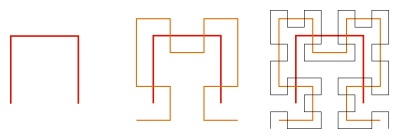
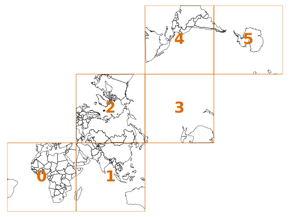
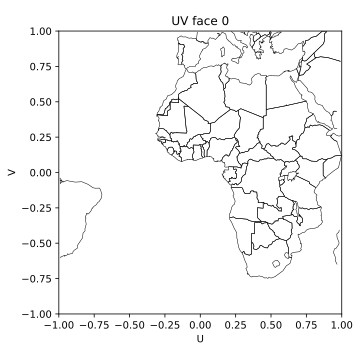
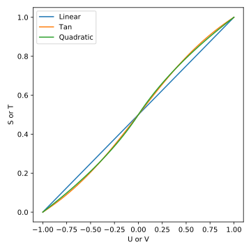
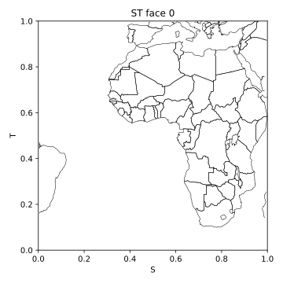

S2 Geometry Concepts¶
The core concepts of S2 Geometry are well explained on the S2 Geometry website. This page aims to supplement the information available there with more details about the coordinate systems and specifics of the cell ID system, so I suggest reading that site in conjunction with this one.
You may also consider looking at the Annotated Source section of this s2cell documentation, which contains a well commented implementation of the minimal steps for mapping between lat/lon, S2 cell IDs and tokens.
Should you find any typos, issues or complete misunderstandings in the descriptions below, a comment in an issue would be very welcome!
Hilbert Curve¶
The core of the S2 cell ID system is based on the S2 cube and the space-filling Hilbert Curve. The first three steps of the Hilbert Curve are shown in Fig. 1. In each step, the line segments from the previous step are replaced with the base ‘U’ shape and joined in a self-similar way to produce a single continuous curve. The benefit of this shape is that it can be used to map the two dimensional plane into a one dimensional distance along the curve, with good locality (meaning values close in curve position generally become close in 2D space).
{kind=link}

Fig. 1 Hilbert Curves of order 1, 2 and 3 (Qef, Public domain, via Wikimedia Commons)¶
The orientation of the curve at each segment within its parent is updated based on the parent’s orientation and the following mapping (indexed by the curve segment 0 to 3, numbered clockwise from lower left in nominal curve orientation):
0: Update swap axes (I and J)
1: Inherit orientation from parent
2: Inherit orientation from parent
3: Update swap and invert axes (I and J)
This is linked to the concept of a Quadtree, where a square is recursively subdivided into four equal sub-cells. When considered from the Hilbert Curve perspective, the curve walks the centers of the tree’s leaf nodes.
In S2, six copies of the Hilbert Curve are mapped onto the six faces of a cube surrounding the unit sphere, with the curve orientation on each face adjusted to produce a single continuous curve that wraps from face to face. The ‘level’ value used by S2 corresponds to the Hilbert Curve ‘order’ shown above, with the levels continuing fractally to 30 iterations.
Coordinate Systems¶
A number of intermediate coordinate systems are used when mapping between latitude/longitude and S2 cell IDs. These are explained and justified below, in the order they are typically used when creating a cell ID.
Latitude and Longitude¶
Range: \(lat = [-\pi/2, \pi/2], lon = [0, 2\pi]\)
Units: Radians
Data Type: double
Shape of Cell: Polygon joined by spherical geodesics
Latitude and longitude are the familiar coordinates used to represent locations on the surface of the earth, as you might retrieve from your phone’s GPS or in most GIS data. In a spherical earth, these represent the angular offsets from the intersection of the equator and a reference meridian respectively. However, a spherical earth approximation is often not sufficiently accurate, so more complex ellipsoidal/spheroidal approximations, such as WGS84, are often used instead.
In spheroid earth models, the definition of longitude remains the same as for spherical earth models above, but geodetic latitude becomes the angle between the local normal of the spheroid surface and the equatorial plane.
S2 specifies no convention for the spheroid or sphere standard to use, since it does not care about the frame from which the lat/lon angles are extracted. However, you must be consistent in the frame of the lat/lon values you pass it, much like you must be consistent with the character encoding of strings. In most cases, you should probably use WGS84 and stick to it, unless you have a compelling reason otherwise (much like UTF8 in the character encoding analogy).
The lat/lon values are internally stored as radians in many S2 implementations, but are more conventionally passed around in degrees in general GIS software. The units do not effect the operation of S2, but care should be taken not to mix datasets using degree and radian representations of latitude and longitude. The latitude and longitude are typically also expected to be normalised to the ranges shown above, with the latitude clipped to the range and the longitude wrapped modulo 360 degrees.
S2Point (XYZ)¶
Range: \(x = [-1.0, 1.0], y = [-1.0, 1.0], z = [-1.0, 1.0]\)
Data Type: double
Shape of Cell: Polygon joined by spherical geodesics
The S2Point or XYZ coordinate system is the fundamental cartesian type for S2, based on coordinates on the unit sphere. The axes of this coordinate system are arranged such that the \(x\) axis points out of the (lat = 0°, lon = 0°) point, the \(z\) axis points out of the North Pole (lat = 90°, lon = N/A) and the \(y\) axis therefore points out of the (lat = 0°, lon = 90°) point to produce a right-handed orthogonal system. This coordinate system arrangement is effectively equivalent to the Earth-Centered Earth-Fixed (ECEF) coordinate frame, with the transformation from latitude and longitude angles using a unit sphere rather than a WGS84 or similar spheroid. There are a number of benefits of this representation compared to lat/lon angles, in particular the avoidance of degenerate points at the poles. The XYZ vector is typically normalised to unit length.
Face¶
Range: \([0, 5]\)
Data Type: uint8 or wider
The face integer specifies which of the six cube faces a point on the unit-sphere is mapped onto, using the layout shown in Fig. 2. The selection of the face is determined by the dominant axis in the S2Point (XYZ) coordinate, as shown in Table 1. To give a continuous curve across the faces, some of the faces use tranposed or inverted copies of the base Hilbert Curve.

Fig. 2 Cube face mapping¶
UV¶
Range: \(u = [-1.0, 1.0], v = [-1.0, 1.0]\)
Data Type: double
Shape of Cell: Rectangular
The UV coordinate system is similar to the concept of UV mapping commonly used in computer graphics, whereby a 3D geometry is unwrapped to produce a 2D coordinate space for texture mapping. In the case of S2, the \(u\) and \(v\) coordinates represent the location of a point on a single face of the cube, with the point \(u = 0, v = 0\) representing the center of the face. Fig. 3 shows how the earth is mapped into the UV coordinates of face 0 of the S2 cube.

Fig. 3 Face 0 in UV coordinates¶
ST¶
Range: \(s = [0.0, 1.0], t = [0.0, 1.0]\)
Data Type: double
Shape of Cell: Square
The ST coordinate system is a warped version of the UV coordinate system, after mapping through a projection function. This is done to give a more homogenous area per S2 cell on the unit-sphere, where cells near the cube face edges would otherwise be significantly smaller than those near the face centers.
There are actually three projection implementations for UV to ST specified in the S2 reference implementation, namely the ‘linear’, ‘tan’ and ‘quadratic’ projections. The linear projection provides no cell warping and the tan projection provides a nearer ideal cell warping for cell homogeneity. The default ‘quadratic’ projection is an approximation of the tan projection, with substantially better performance achieved avoiding trigonometric functions. There are effectively no circumstances that the non-default (linear or tan) projections should be used with S2, since they provide an incompatible cell layout that would mean any system using them could not interoperate cleanly with a system on the standard projection.
Fig. 4 shows the shapes of the three mapping functions, where we can see that the quadratic projection provides a good match to the more computationally expensive tan projection. Fig. 5 shows the ST mapping of the same region as shown in UV in Fig. 4

Fig. 4 The three UV to ST projections provided in the reference S2 implementation¶

Fig. 5 Face 0 in ST coordinates¶
Warning
Note that the C++ and Java reference implementations have slightly different definitions for the ST coordinate system, meaning that values of \(s\) and \(t\) cannot be shared between the two. This does not effect the final cell IDs since the differences are subsequently corrected for, but the intermediate ST terms should be treated as implementation specific. The equations in this document use the C++ variant of ST.
IJ¶
Range: \(i = [0, 2^{30}), j = [0, 2^{30})\)
Data Type: uint64
Shape of Cell: Square
The \(i\) and \(j\) coordinates specify the two dimensions of the leaf-cells on a cube face. This coordinate system is directly related to the final Hilbert Curve Position coordinate used in the cell ID, through the lookup tables generated in Lookup Table Generation.
Hilbert Curve Position¶
Range: \([0, 2^{60})\)
Data Type: uint64
The Hilbert Curve Position is given by a 60 bit integer and represents the location along the curve (e.g. \(0\) being the start of the curve and \(2^{60} - 1\) being the end of the curve). The locality produced by the Hilbert Curve shape means that values that are close numerically in the position integer are typically also close in 2D position within the cube face.
Each pair of bits of the position represents one Hilbert Curve ‘order’ subdivision of the cells, or another layer of the quadtree subdivisions. The most-significant bits in the position end up representing the higher level cells and each subsequent pair of bits determining the chosen subcell in the next quadtree subdivision, with the order of the cells determined by the local Hilbert Curve orientation.
Si/Ti¶
Range: \(si = [0, 2^{31}), ti = [0, 2^{31})\)
Data Type: uint64
Shape of Cell: Square
\(si\) and \(ti\) are integral versions of the values \(s\) and \(t\) respectively, which are used when mapping IJ values from a cell ID back into ST value. The range of Si/Ti is twice that of IJ. The additional power of two in the range of Si/Ti versus IJ allows for \(si\) and \(ti\) to specify both the center and edges of the leaf cells, whilst IJ only specifies the leaf cell generically.
Cell ID¶
Range: \([0, 2^{64})\)
Data Type: uint64
Shape of Cell: Square
The S2 cell ID is another of the fundamental S2 types, which uses a single 64 bit unsigned integer to represent a location on the surface of the earth with up to millimeter resolution. Due to the locality given by the Hilbert Curve and the layout of faces in Fig. 2, cell IDs that are close numerically are generally close geographically, which can be useful when sharding on a cell ID. Note however that the opposite is not necessarily true: points that are geographically close may not always be close numerically.
A cell ID is composed of the three Face bits f, up to 60
Hilbert Curve Position bits p, one trailing 1 bit and a number of padding 0 bits, using the bit
layout shown below:
fffpppp...pppppppp1 # Level 30 cell ID
fffpppp...pppppp100 # Level 29 cell ID
fffpppp...pppp10000 # Level 28 cell ID
...
etc
...
fffpp10...000000000 # Level 1 cell ID
fff1000...000000000 # Level 0 cell ID
You may notice that the position of the trailing 1 bit allows for quick determination of the cell ID’s level. Additionally, the trailing bit is always in an even numbered bit (counting from 0 on the LSB), which means that not all 64 bit values are a valid cell ID. A cell ID would be classified as invalid if either of the following are true:
The 3 face bits
fffare any value outside the range \([0, 5]\).The trailing 1 bit is missing or is in an odd numbered bit in the cell ID integer.
The above checks can be written programmatically like so:
def cell_id_is_valid(cell_id: Union[int, np.uint64]) -> bool:
# Check face bits
if (cell_id >> 61) > 5:
return False
# Check trailing 1 bit is in one of the even bit positions allowed for the 30 levels, using
# the mask:
# 0b0001010101010101010101010101010101010101010101010101010101010101 = 0x1555555555555555
lowest_set_bit = cell_id & (~cell_id + 1)
if not lowest_set_bit & 0x1555555555555555:
return False
return True # Checks have passed, cell ID must be valid
In S2 implementations, there are two invalid cell IDs that are given particular special status:
The
0cell ID is the ‘default’ or ‘none’ cell ID, often used in the absence of any specific valid cell ID. This cell ID is therefore less than all valid cell IDs.The ‘sentinel’ cell ID, which is composed of all 1 bits (\(= 2^{64} - 1\)). This cell ID is therefore greater than all valid cell IDs.
Operations¶
This section walks through the steps for a number of common cell ID operations, such as conversion and truncation. The steps will be shown here in mathematical form where possible; if you want a more programmatic form, consider instead looking at the Annotated Source section of this s2cell documentation.
Lat/Lon to S2 Cell ID¶
The Latitude and Longitude (in radians), are first converted to a S2Point (XYZ) using a unit sphere:
The Face is determined by the largest absolute \(x\), \(y\) or \(z\) component of the S2Point vector. When the component is negative, the second (back) set of three faces is used:
Largest XYZ Component + Sign |
Face |
|---|---|
+x |
0 |
+y |
1 |
+z |
2 |
-x |
3 |
-y |
4 |
-z |
5 |
The face and XYZ point can then be mapping into UV using the remaining two non-dominant \(x\), \(y\) or \(z\) components not already used to determine the face; these are then both divided by the dominant component to produce a value in the range \([-1.0, 1.0]\). From the listing in the table below you can see the equations used to calculate \(u\) and \(v\) on each face of the cube. Additionally, you can see that some faces of the cube are transposed or flipped to produce the single continuous curve on the cube.
Face |
\(u\) |
\(v\) |
|---|---|---|
0 |
\(y/x\) |
\(z/x\) |
1 |
\(-x/y\) |
\(z/y\) |
2 |
\(-x/z\) |
\(-y/z\) |
3 |
\(z/x\) |
\(y/x\) |
4 |
\(z/y\) |
\(-x/y\) |
5 |
\(-y/z\) |
\(-x/z\) |
Once the face and UV coordinates are calculated, they are then put through a non-linear mapping into ST coordinates, shown in the equations below:
From the floating point \(s\) and \(t\), we then map into the full range of the integral IJ coordinates, which are effectively the 2D coordinates of the final leaf cell on the selected cube face:
The bits in \(i\) and \(j\) are then converted 8 bits (4 each) at a time into 8 bits of Hilbert Curve Position, using one of the lookup tables generated in Lookup Table Generation. Along with the eight bits converted in each iteration, there are an additional two bits mapped that track the orientation of the latest Hilbert Curve segment. The combination of these two bits allow for representation of all four of the elementary rotations of the curve segment:
Swap Bit (mask:
0b01): Indicates that the Hilbert Curve segment has \(i\) and \(j\) swappedInvert Bit (mask:
0b10): Indicates that the Hilbert Curve segment has each of the \(i\) and \(j\) axes inverted.
Prior to the iterations, the relevant state is initialised for the conversion:
bits = face & SWAP_MASK # Initial lookup bits, ordered as iiiijjjjoo
cell_id = face << 60 # Insert face at second most signficant bits of cell ID
lookup_mask = (1 << 4) - 1 # Mask of 4 one bits: 0b1111
In each step, we extract four bits of each of \(i\) and \(j\), starting from the most significant. Along with the current curve orientation, these are mapped into eight bits of Hibert Curve position and inserted into the new cell ID. The new curve orientation for the next iteration is also kept:
for k in range(7, -1, -1):
# Grab 4 bits of each of I and J
offset = k * 4
bits += ((i >> offset) & lookup_mask) << 6
bits += ((j >> offset) & lookup_mask) << 2
# Map bits from iiiijjjjoo to ppppppppoo using lookup table
bits = LOOKUP_POS[bits]
# Insert position bits into cell ID
cell_id |= (bits >> 2) << (k * 8)
# Remove position bits, leaving just new swap and invert bits for the next round
bits &= SWAP_MASK | INVERT_MASK # Mask: 0b11
Finally, the cell ID is left-shifted once to put the face and position bits in the correct locations and the trailing 1 bit is put in the least-significant bit to produce a level 30 leaf cell ID:
cell_id = (cell_id << 1) + 1 # In this case '| 1' and '+ 1' are equivalent, since the LSB is 0
If a lower precision level cell ID is desired immediately from this operation, some of the iterations in the mapping from IJ to Hilbert Curve position can be skipped, since their outputs are masked in the level Truncation. For details on how to calculate the number of iterations required, see the implementation and comments in Annotated Source.
Truncation¶
Truncation is the process of taking a high precision level cell ID and reducing it to a lower precision level cell ID that represents the relevant parent cell of the original. This is useful when aggregating high resolution geographic data at a regional level, or perhaps when producing indexes over S2 cell IDs. The truncation operation involves masking out the relevant trailing bits of the cell ID with zeros and then inserting the trailing 1 bit at the necessary location:
lsb = 1 << (2 * (30 - level))
truncated_cell_id = (cell_id & -lsb) | lsb
Warning
The provided initial cell ID must already be at a level equal to or greater than the desired truncation level, otherwise the operation below will not behave as expected (since ‘truncating’ something to a higher precision is not a valid process). If implementing this operation yourself, your language’s equivalent of an exception should probably be raised if this condition is not met.
S2 Cell ID to Lat/Lon¶
The process of converting a Cell ID coordinate back to Latitude and Longitude is mostly the inverse steps of those shown in Lat/Lon to S2 Cell ID. Firstly, the Face and IJ coordinates are extracted from the cell ID using a similar iteration with 8 bit lookups, producing 4 bits each of \(i\) and \(j\):
face = cell_id >> 61
bits = face & SWAP_MASK # Initial lookup bits, ordered as ppppppppoo
lookup_mask = (1 << 4) - 1
i = 0
j = 0
for k in range(7, -1, -1):
# Pull out 8 bits of cell ID, except in first loop where we pull out only 4
n_bits = 8 if k == 7 else 4
extract_mask = (1 << (2 * n_bits)) - 1 # 8 (or 4) one bits
bits += (
(cell_id >> (k * 8 + 1)) & extract_mask
) << 2
# Map bits from ppppppppoo to iiiijjjjoo using lookup table
bits = LOOKUP_IJ[bits]
# Extract I and J bits
offset = k * 4
i += (bits >> 6) << offset # Don't need lookup mask here
j += ((bits >> 2) & lookup_mask) << offset
# Remove I and J bits, leaving just new swap and invert bits for the next round
bits &= SWAP_MASK | INVERT_MASK # Mask: 0b11
The \(i\) and \(j\) returned here are of one of the two leaf (level 30) cells that are
located diagonally closest to the cell center. This happens because repeated ..00.. will select
the ‘lower left’ (for nominally oriented Hilbert curve segments) of the sub-cells. The ..10..
arising from the trailing bit, prior to the repeated ..00.. bits, ensures we first pick the
‘upper right’ of the cell, then iterate in to lower left until we hit the leaf cell. This means
we pick the leaf cell to the north east of the parent cell center (again for nominal orientation).
However, in the case of the swapped and inverted curve segment (4th sub-curve segment), the
..10.. will select the ‘lower left’ and then iterate to the ‘upper right’ with each ..00..
following. In that case, we will be offset left and down by one leaf cell in each of \(i\) and
\(j\), which needs to be fixed to have a consistent mapping. This is detectable by seeing that
the final bit of \(i\) or \(j\) is 1 (i.e we have picked an odd row/column, which will
happen concurrently in both I and J, so we only need to check one), except in case of level 29 where
the logic is inverted and the correction needs to be applied when we pick an even row/column (i.e
\(i\) or \(j\) ends in 0), since there are no trailing ..00.. available after the
..10.. when we are at level 29+. This behaviour can be captured in the expression:
is_leaf = bool(cell_id & 1)
apply_correction = not is_leaf and (i ^ (is level 29)) & 1 # Pseudocode
apply_correction = not is_leaf and (i ^ (cell_id >> 2)) & 1
We check for level 29 by looking for the trailing 1 in the third least-significant bit, when we already know that we are not a leaf cell (which could give false positive) by the initial check in the expression.
The center correction is applied at the same time as mapping into Si/Ti. For leaf
cells, we pick \(si\) and \(ti\) values that represent the center of the level 30 cell. For
non-leaf cells, we pick the relevant edges of the leaf cell based on the value of
apply_correction above. The correction delta is 0, 1 or 2, rather than 0, 0.5 or 1, since we are
deailing with integer values and as the values of \(si\) and \(ti\) are twice those in
\(j\) and \(j\).
The integers \(si\) and \(ti\) are converted to floating point ST coordinates by dividing by the maximum range of Si/Ti:
From here, we reverse the mapping from \(s\) and \(t\) to UV using the inverse of the equations shown in the section above:
The unnormalised S2Point (XYZ) coordinate is then produced using the \(u\) and \(v\) coordinates and the face extracted at the beginning of this section. The generated XYZ point is the position of the UV coordinate on the biunit cube.
Finally, the XYZ point can be mapped into Latitude and Longitude. We do not need a normalised XYZ coordinate for this particular operation, since the normalised and unnormalised triangles used to calculate the lat/lon angles are geometrically similar.
Note that the above will typically be returned in radians, but you may wish to convert to degrees to interoperate with other GIS software.
Lookup Table Generation¶
Two 1024 item lookup tables for mapping between IJ and Hilbert Curve Position are typically generated on application startup, but may also be precalculated at compile time. These tables map 8 bits of IJ/position + 2 bits of curve orientation into 8 new bits of position/IJ + 2 ew bits of the latest curve orientation. These tables are generated by calculating the four orientated copies of a 4th order Hibert Curve from a base orientation table. The mapping produced is bijective, meaning the two lookup tables are effectively the inverse of one another.
The generation code below is an iterative implementation of the lookup table generation hoisted out of the s2cell source. Most S2 libraries will typically instead tend to use a more common recursive implementation, but the iterative version shown below is slightly easier to get to grips with.
# Lookup table of two bits of IJ from two bits of curve position, based also on the current
# curve orientation from the swap and invert bits
POS_TO_IJ = np.array([
[0, 1, 3, 2], # 0: Normal order, no swap or invert
[0, 2, 3, 1], # 1: Swap bit set, swap I and J bits
[3, 2, 0, 1], # 2: Invert bit set, invert bits
[3, 1, 0, 2], # 3: Swap and invert bits set
], dtype=np.uint64)
# Lookup for the orientation update mask of one of the four sub-cells within a higher level
# cell. This mask is XOR'ed with the current orientation to get the sub-cell orientation.
POS_TO_ORIENTATION_MASK = np.array([
SWAP_MASK, 0, 0, SWAP_MASK | INVERT_MASK
], dtype=np.uint64)
# Initialise empty lookup tables
lookup_length = 1 << (2 * LOOKUP_BITS + 2) # = 1024
LOOKUP_POS = np.zeros((lookup_length,), dtype=np.uint64)
LOOKUP_IJ = np.zeros((lookup_length,), dtype=np.uint64)
# Generate lookups for each of the base orientations given by the swap and invert bits
for base_orientation in np.array([
0, SWAP_MASK, INVERT_MASK, SWAP_MASK | INVERT_MASK # 0-3 effectively
], dtype=np.uint64):
# Walk the 256 possible positions within a level 4 curve. This implementation is not the
# fastest since it does not reuse the common ancestor of neighbouring positions, but is
# simpler to read
for pos in np.arange(256, dtype=np.uint64): # 4 levels of sub-divisions
ij = 0 # Has pattern iiiijjjj, not ijijijij
orientation = base_orientation
# Walk the pairs of bits of pos, from most significant to least, getting IJ and
# orientation as we go
for bit_pair_offset in range(4):
# Bit pair is effectively the sub-cell index
bit_pair = (pos >> ((3 - bit_pair_offset) * 2)) & 0b11
# Get the I and J for the sub-cell index. These need to be spread into iiiijjjj
# by inserting as bit positions 4 and 0
ij_bits = POS_TO_IJ[orientation][bit_pair]
ij = (
(ij << 1) # Free up position 4 and 0 from old IJ
| ((ij_bits & 2) << 3) # I bit in position 4
| (ij_bits & 1) # J bit in position 0
)
# Update the orientation with the new sub-cell orientation
orientation = orientation ^ _S2_POS_TO_ORIENTATION_MASK[bit_pair]
# Shift IJ and position to allow orientation bits in LSBs of lookup
ij <<= 2
pos <<= 2
# Write lookups
LOOKUP_POS[ij | base_orientation] = pos | orientation
LOOKUP_IJ[pos | base_orientation] = ij | orientation
S2 Tokens¶
S2 tokens provide a concise string representation of cell IDs, with a (almost) 1-to-1 mapping between cell IDs and tokens. These tokens are particularly useful for non-binary interfaces, where transferring uint64 is not feasible or transferring the base-10 string representation would be a substantial overhead, particularly for low precision level cell IDs.
S2 tokens can be considered analogous to the Geohash encoding system, albeit with more consistent behaviour at the poles and finer-grained precision level increments. However, unlike Geohash, you cannot just chop off characters from a high precision S2 token to get a parent lower precision token, since the trailing 1 bit in the cell ID would not be set correctly in most cases. Therefore, to get a lower level S2 token, you must map it back into a cell ID, find the desired parent and then map back to a token string.
Generation of S2 tokens is done by hex (base-16) encoding the 64-bit cell ID, producing a 16
character string. Any trailing ‘0’ characters are then stripped from the right-hand side of the
string and become implicit. The cell ID 0 is special-cased to encode to the string ‘X’ (or ‘x’)
rather than a zero-length string (after zero stripping), since some languages or systems may not
handle a zero-length string suitably (e.g treating empty strings as falsy).
Due to the implicit zero stripping, the length of the S2 token is dictated by the precision level of the cell ID that it represents. Since each hex character represents 4 bits of information, there are two S2 levels per character (with one extra character’s worth used for the 3 face + 1 trailing bits). This means that low level cell IDs will encode as shorter tokens, whilst a level 30 cell ID will encode as the full 16 hex characters.
Note that S2 tokens are case insensitive, so the token 2ef59b is the same as 2EF59B, or any
other mixed case version such as 2eF59B. Therefore, care should be taken when comparing or
saving S2 tokens to ensure that you have a consistent case expectation or otherwise compare case
insensitively. Additionally, if you are receiving tokens from an external source, expect that you
may receive malformed tokens that you to have to strip any trailing zeros from yourself, since the
tokens 2ef59b and 2ef59b00 are equivalent but the latter is not in the correct canonical
form. The code below is a simple example of ensuring that a given token is ‘canonicalised’ to the
form generated by the reference C++ implementation:
Lower case (except ‘X’ below)
No whitespace
Trailing zeros stripped
Zero cell ID represented as ‘X’, not ‘x’ or ‘’
def token_to_canonical_token(token: str) -> str:
# Convert token to lower case.
# You may instead want to use upper-case, but a convention of lower case is more consistent
# with how the reference implementations generate their tokens. Note that 'X' below will be
# returned upper case
token = token.lower()
# Strip any surrounding whitespace
token = token.strip()
# Strip any trailing zeros
token = token.rstrip('0')
# If empty string or 'x', return 'X' token
if token == '' or token == 'x':
token = 'X'
return token
token_to_canonical_token('2EF') # -> '2ef'
token_to_canonical_token('2Ef000') # -> '2ef'
token_to_canonical_token(' 2ef ') # -> '2ef'
token_to_canonical_token('') # -> 'X'
The table below shows examples of S2 tokens for the same point at every level from 0 to 30, as well
as the special ‘X’ token for cell ID 0.
Cell ID Base-10 |
Cell ID Binary |
Level |
Token |
Token Length |
|---|---|---|---|---|
0 |
0000000000000000000000000000000000000000000000000000000000000000 |
N/A |
X |
1 |
3458764513820540928 |
0011000000000000000000000000000000000000000000000000000000000000 |
0 |
3 |
1 |
3170534137668829184 |
0010110000000000000000000000000000000000000000000000000000000000 |
1 |
2c |
2 |
3386706919782612992 |
0010111100000000000000000000000000000000000000000000000000000000 |
2 |
2f |
2 |
3368692521273131008 |
0010111011000000000000000000000000000000000000000000000000000000 |
3 |
2ec |
3 |
3382203320155242496 |
0010111011110000000000000000000000000000000000000000000000000000 |
4 |
2ef |
3 |
3383329220062085120 |
0010111011110100000000000000000000000000000000000000000000000000 |
5 |
2ef4 |
4 |
3383610695038795776 |
0010111011110101000000000000000000000000000000000000000000000000 |
6 |
2ef5 |
4 |
3383821801271328768 |
0010111011110101110000000000000000000000000000000000000000000000 |
7 |
2ef5c |
5 |
3383769024713195520 |
0010111011110101100100000000000000000000000000000000000000000000 |
8 |
2ef59 |
5 |
3383782218852728832 |
0010111011110101100111000000000000000000000000000000000000000000 |
9 |
2ef59c |
6 |
3383781119341101056 |
0010111011110101100110110000000000000000000000000000000000000000 |
10 |
2ef59b |
6 |
3383781943974821888 |
0010111011110101100110111100000000000000000000000000000000000000 |
11 |
2ef59bc |
7 |
3383782012694298624 |
0010111011110101100110111101000000000000000000000000000000000000 |
12 |
2ef59bd |
7 |
3383782029874167808 |
0010111011110101100110111101010000000000000000000000000000000000 |
13 |
2ef59bd4 |
8 |
3383782025579200512 |
0010111011110101100110111101001100000000000000000000000000000000 |
14 |
2ef59bd3 |
8 |
3383782026652942336 |
0010111011110101100110111101001101000000000000000000000000000000 |
15 |
2ef59bd34 |
9 |
3383782026921377792 |
0010111011110101100110111101001101010000000000000000000000000000 |
16 |
2ef59bd35 |
9 |
3383782026988486656 |
0010111011110101100110111101001101010100000000000000000000000000 |
17 |
2ef59bd354 |
10 |
3383782026971709440 |
0010111011110101100110111101001101010011000000000000000000000000 |
18 |
2ef59bd353 |
10 |
3383782026967515136 |
0010111011110101100110111101001101010010110000000000000000000000 |
19 |
2ef59bd352c |
11 |
3383782026966466560 |
0010111011110101100110111101001101010010101100000000000000000000 |
20 |
2ef59bd352b |
11 |
3383782026967252992 |
0010111011110101100110111101001101010010101111000000000000000000 |
21 |
2ef59bd352bc |
12 |
3383782026967056384 |
0010111011110101100110111101001101010010101110010000000000000000 |
22 |
2ef59bd352b9 |
12 |
3383782026967072768 |
0010111011110101100110111101001101010010101110010100000000000000 |
23 |
2ef59bd352b94 |
13 |
3383782026967068672 |
0010111011110101100110111101001101010010101110010011000000000000 |
24 |
2ef59bd352b93 |
13 |
3383782026967071744 |
0010111011110101100110111101001101010010101110010011110000000000 |
25 |
2ef59bd352b93c |
14 |
3383782026967071488 |
0010111011110101100110111101001101010010101110010011101100000000 |
26 |
2ef59bd352b93b |
14 |
3383782026967071424 |
0010111011110101100110111101001101010010101110010011101011000000 |
27 |
2ef59bd352b93ac |
15 |
3383782026967071440 |
0010111011110101100110111101001101010010101110010011101011010000 |
28 |
2ef59bd352b93ad |
15 |
3383782026967071428 |
0010111011110101100110111101001101010010101110010011101011000100 |
29 |
2ef59bd352b93ac4 |
16 |
3383782026967071427 |
0010111011110101100110111101001101010010101110010011101011000011 |
30 |
2ef59bd352b93ac3 |
16 |
Conversion from Cell ID to Token¶
Conversion from a S2 cell ID cell_id to a token is done by the following Python code, which is
based on the s2cell.cell_id_to_token() function:
def cell_id_to_token(cell_id: Union[int, np.uint64]) -> str:
# The zero token is encoded as 'X' rather than as a zero-length string
if cell_id == 0:
return 'X'
# Convert cell ID to 16 character hex string and strip any implicit trailing zeros
return '{:016x}'.format(cell_id).rstrip('0')
cell_id_to_token(3383781119341101056) # -> '2ef59b'
Conversion from Token to Cell ID¶
Conversion from a S2 token token to a cell ID is done by the following Python code, which is
based on the s2cell.token_to_cell_id() function:
def token_to_cell_id(token: str) -> np.uint64:
# Check for the zero cell ID represented by the character 'x' or 'X' rather than as the empty
# string
if token in ('x', 'X'):
return np.uint64(0)
# Add stripped implicit zeros to create the full 16 character hex string
token = token + ('0' * (16 - len(token)))
# Convert to cell ID by converting hex to int
return np.uint64(int(token, 16))
token_to_cell_id('3') # -> 3458764513820540928